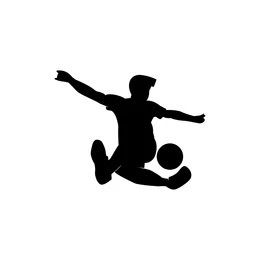

Freestyle Football is my passion

Czym jest freestyle football
Historia
Style
Polska we Freestyle Footballu
Turnieje
Leksykon trików
Kontakt
Strona w budowie
Kontakt
Prezes PFFA (Polish Freestyle Football Association
Polish Freestyle Football Instagram